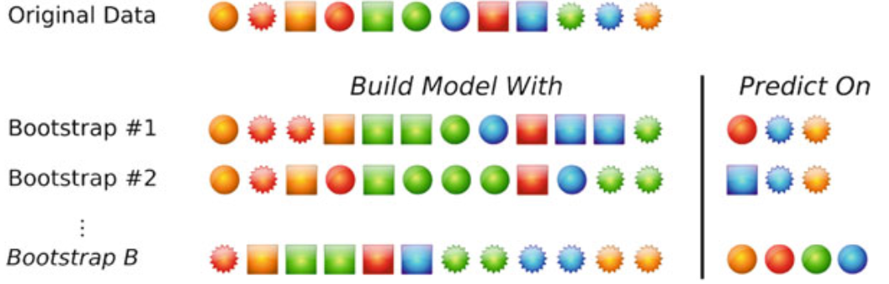

4 Model Tuning
Identify settings for the model’s parameters that yield the best and most realistic predictive performance
4.1 Data splitting method
A good rule of thumb is about 75–80 % on train subset and the rest for the test subset. Proportionally large test sets divide the data in a way that increases bias in the performance estimates.
4.1.1 Nonrandom approaches to splitting the data
Example: - If a model was being used to predict patient outcomes, the model may be created using certain patient sets (e.g., from the same clinical site or disease stage), and then tested on a different sample population to understand how well the model generalizes.
In chemical modeling for drug discovery, new “chemical space” is constantly being explored. We are most interested in accurate predictions in the chemical space that is currently being investigated rather than the space that was evaluated years prior.
In spam filtering; it is more important for the model to catch the new spamming techniques rather than prior spamming schemes.
4.1.2 Random sampling methods
4.1.2.1 Simple random sample
The simplest way to split the data randomly into a training and test.
Disadvantage: limited ability to characterize the uncertainty in the results.
simple k-Fold Cross-Validation: The samples are randomly partitioned into k sets of roughly equal size. A model is fit using the all samples except one subset. The held-out samples are predicted by this model and used to estimate performance measures. The first subset is returned to the training set an procedure repeats with the next subset held out, and so on. Performance estimates, are calculated from each set of held-out samples and then averaged.
NOTES: The choice of k is usually 5 or 10, but there is no formal rule. The bias is smaller for k = 10 than k = 5. As k gets larger, the difference in size between the training set and the resampling subsets gets smaller. But larger values of k are more computationally burdensome.
Advantage: Low computational costs. . Disadvantage: k-fold cross-validation generally has high variance compared to other methods (only for small training sets). USE: If sample sizes are large (> 10 000) and we want to choose tuning parameters
repeated k-Fold Cross-Validation
Advantage: Increase the precision of the estimates while still maintaining a small bias. The bias and variance properties are good and, given the sample size, the computational costs are not large. Disdvantage: Large computational costs. USE: with k = 10; If the samples size is small (< 1000 obs) and we want to choose tuning parameters

leave-one-out Cross-Validation / LOOCV: fits as many models as there are samples in the training set, should only be considered when the number of samples is very small.
leave-group-out Cross-Validation / Repeated training/test splits / Monte Carlo cross-validation: Same as k-fold cross-validation except that samples can be represented in multiple held-out subsets. Also, the number of repetitions is usually larger than in k-fold cross-validation
Disadvantage:
NOTES: Increase the number of repetition can allow to increase the proportion of data in the train set and decreasing the uncertainty of the performance estimates. To get stable estimates of performance, it is suggested to choose a larger number of repetitions (say 50–200)

The Bootstrap: Each train subset is the same size as the original and can contain multiple instances of the same data point (taken with replacement). Samples not selected by the bootstrap (“out-of-bag” samples) are predicted and used to estimate model performance
Advantage: error rates have less uncertainty than k-fold cross-validation. Very low variance. Disadvantage: On average, 63.2 % of the data points the bootstrap sample are represented at least once, so this technique has bias. similar to k-fold cross-validation when k ≈ 2. If the training set size is small, this bias may be problematic, but will decrease as the training set sample size becomes larger. USE: If the goal is to choose between models (boosted trees vs support vector machines…), as opposed to getting the best indicator of performance

The Bootstrap 632 method
Advantage: The modified bootstrap estimate reduces the bias.
Disadvantage: The estimate is unstable with small samples sizes. This estimate can also result in unduly optimistic results when the model severely over-fits the data, since the apparent error rate will be close to zero.
The Bootstrap 632+ method Advantage: Allows to adjust the bootstrap 632 method estimates
4.1.2.2 Stratified random
To account for the outcome when splitting the data. Applies random sampling within subgroups (such as the classes or is outcomes are numbers the numeric values are broken into similar groups (e.g., low, medium, and high)).
- k-Fold Cross-Validation
4.1.2.3 Maximum dissimilarity sampling
The data is split on the basis of the predictor values.
4.2 Choosing Tuning Parameters
Pick the settings associated with the numerically best performance estimates. Disadvantage: lead to models that are overly complicated
Pick simpler models that provide acceptable performance (relative to the numerically optimal settings)
The “one-standard error” method: pick the simplier model within a single standard error of the numerically best value. In table below we would pick cost value of 2.
the “percent decrease in performance” method: pick the simplier model that is within a certain tolerance of the numerically best value. (e.g., The percent decrease in performance could be quantified by (X − O)/O where X is the performance value and O is the numerically optimal value. For example, in Fig. 4.9, the best accuracy value across the profile was 75 %. If a 4 % loss in accuracy was acceptable as a trade-off for a simpler model, accuracy values greater than 71.2 % would be acceptable. For the profile in Fig. 4.9, a cost value of 1 would be chosen using this approach.)

4.3 Metrics / performance measures
4.3.1 For models predicting a categorical outcome
4.3.1.1 Accuracy based metrics
A good model has generally a metric above 0.7 / 70%
- Accuracy:
Higher Value: Better performance (values form 0 to 1)
When to use: Use when the classes are balanced (e.g., Suppose the rate of this disorder1 in fetuses is approximately 1 in 800 or about one-tenth of one percent. A predictive model can achieve almost perfect accuracy by predicting all samples to be negative for Down syndrome.), and misclassification of different classes has similar consequences.
Advantage: Simple and easy to interpret.
Disadvantage: Can be misleading when classes are imbalanced / make no distinction about the type of errors being made
Description: Accuracy measures the proportion of correct predictions out of all predictions made by the model.
Example: Suppose you have a binary classification problem to identify whether an email is spam or not. If your model has an accuracy of 90%, it means it correctly classified 90% of the emails.
Calculation: (True Positives + True Negatives) / (True Positives + True Negatives + False Positives + False Negatives) (Number of Correct Predictions) / (Total Number of Predictions)
Notes:
When evaluating the accuracy of a model, the baseline accuracy rate to beat would be the percentage which could be achieve by simply predicting all samples to the dominant category (e.g., In the data set, 70 % were rated as having good, accuracy rate to beat would be 70 % which is the no-information rate).
error rate: (Number of Incorrect Predictions) / (Total Number of Predictions)
1.5) Kappa:
- Higher Value: Better performance (values from -1 to 1; 0.30 to 0.50 indicate reasonable agreement)
- When to use: Rather than calculate the overall accuracy and compare it to the no-information rate, Kappa can be used that take into account the class distributions of the training set samples.
- Advantage: Takes into account the accuracy that would be generated simply by chance.
- Disadvantage: NA
- Description: assess the agreement between two raters
- Example: 0 means there is no agreement between the observed and predicted classes, while a value of 1 indicates perfect concordance of the model prediction and the observed classes. Negative values indicate that the prediction is in the opposite direction of the truth, but large negative values seldom occur, if ever, when working with predictive models.
- Calculation: Kappa = O − E / 1−E: O is the observed accuracy and E is the expected accuracy based on the marginal totals of the confusion matrix.
- Note: The Kappa statistic can also be extended to evaluate concordance in problems with more than two classes. When there is a natural ordering to the classes (e.g., “low,”“medium,” and “high”), an alternate form of the statistic called weighted Kappa can be used to enact more substantial penalties on errors that are further away from the true result. For example, a “low” sample erroneously predicted as “high” would reduce the Kappa statistic more than an error were “low” was predicted to be “medium.” See (Agresti 2002)for more details.
- Precision:
- Higher Value: Better performance (good = 0.7)
- When to use: Use when the cost of false positives is high (e.g., medical diagnosis, fraud detection).
- Advantage: Focuses on the relevance of positive predictions.
- Disadvantage: Ignores true negatives and may not be suitable for imbalanced datasets.
- Description: Precision is the proportion of true positive predictions (correctly predicted positive class) out of all positive predictions made by the model.
- Example: In the spam email example, if your model has a precision of 80%, it means that out of all the emails it predicted as spam, 80% of them were actually spam.
- Calculation: True Positives / (True Positives + False Positives)
- Sensitivity / True positive rate / Recall:
- Higher Value: Better performance
- When to use: Use when the cost of false negatives is high (e.g., medical diagnosis, safety-critical applications).
- Advantage: Focuses on the completeness of positive predictions (includes true positive and false negatives).
- Disadvantage: Ignores true negatives. For many classification problems, sensitivity may be misleading specially under class imbalance. Since a better cutoff may be possible, an analysis of the ROC curve can lead to improvements in these metrics. Consequently, performance metrics that are independent of probability cutoffs are likely to produce more meaningful contrasts between models.
- Description: Is the proportion of true positive predictions out of all actual positive instances in the dataset.
- Example: % of people with heart diseases were correctly identify by the model
- Calculation: TP / (TP + FN)
- Notes:
If the data set includes more events than nonevents, the sensitivity can be estimated with greater precision than the specificity and sensitivity shouls be use to choose between models.
When we want to make unconditional evaluations of the data: know for example what are the chances that … (e.g., If PPV = 0.75 this means that out of all the individuals who tested positive for Disease X, 75% of them actually have the disease, while the remaining 25% are false positives) we can use positive predicted value (PPV = Sensitivity × Prevalence / (Sensitivity × Prevalence) + ((1 − Specificity) × (1 − Prevalence))) IMPOTANT: Predictive values are not often used to characterize the model. There are several reasons why, most of which are related to prevalence. First, prevalence is hard to quantify.
- Specificity / True Negative Rate:
- Higher Value: Better performance
- When to use: Use when you want to focus on correctly identifying negative cases and the cost of false positives is high.
- Advantage: Focuses on the negative class and avoids false positives. Can be misleading specially under class imbalance.
- Disadvantage: Ignores true positives.
- Description: Specificity measures the proportion of true negative predictions out of all actual negative samples.
- Example: % of people without heart diseases were correctly identify by the model
- Calculation: True Negatives / (True Negatives + False Positives);
- Notes:
When we want to make unconditional evaluations of the data: know for example what are the chances that … (If NPV = 0.966, this means that out of all the individuals who tested negative for Disease X, 96.6% of them truly do not have the disease, while the remaining 3.4% are false negatives (individuals who have the disease but were incorrectly identified as negative).) we can use negative predicted value (NPV = Specificity × (1 − Prevalence) / (Prevalence × (1 − Sensitivity)) + (Specificity × (1 − Prevalence))). IMPORTANT: idem
False-positive rate : one minus the specificity
4.3) Youden’s J Index
- Higher Value: Better performance
- When to use: Use when you want a measure that reflects the false-positive and false-negative rates and summarize the magnitude of both types of errors.
- Advantage: Focuses on the negative class and avoids false positives.
- Disadvantage: Ignores true positives and may not be suitable for imbalanced datasets.
- Description: measures the proportions of correctly predicted samples for both the event and nonevent groups.
- Example: % of people without heart diseases were correctly identify by the model
- Calculation: J = Sensitivity + Specificity − 1
- F1 Score:
- Higher Value: Better performance
- When to use: Use when there is a trade-off between precision and recall.
- Advantage: Incorporates both precision and recall into a single metric.
- Disadvantage: Ignores true negatives, which can be important in some cases. May not be ideal for highly imbalanced datasets.
- Description: F1 score is the harmonic mean of precision and recall, providing a balance between the two.
- Example: Let’s say your model has an F1 Score of 0.75, it means there is a balanced trade-off between correctly identifying positive samples and minimizing false positives.
- Calculation: 2 * (Precision * Recall) / (Precision + Recall)
4.3.1.2 Class probabilities
Class probabilities potentially offer more information about model predictions than the simple class value. This
4.7) ROC:
- Higher Value: Better performance (A perfect model that completely separates the two classes would have 100 % sensitivity and specificity / A completely ineffective model would result in an ROC curve that closely follows the 45◦ diagonal line and would have an area under the ROC curve of approximately 0.50.) Area under the curve can be used as a quantitative measure of performance
- When to use: Helpful tool for choosing a threshold that appropriately maximizes the trade-off between sensitivity and specificity (e.g., Lowering the threshold (aka 50%) can we improve the sensitivity to capture more true positives). Make a quantitative assessment of the model
- Advantage: the curve is insensitive to disparities in the class proportions. Metrics that is independent of probability cutoffs
- Disadvantage: disadvantage of using the area under the curve to evaluate models is that it obscures information (i.e., the curves cross both AUC can be the same).
- Description: AUC-ROC measures the area under the receiver operating characteristic curve, which plots the true positive rate (recall) against the false positive rate at various classification thresholds (10%, 20%… 50% = commonly used).
- Example: An AUC-ROC score of 0.85 indicates that the model has an 85% chance of correctly ranking a randomly chosen positive instance higher than a randomly chosen negative instance.
- Calculation: AUC-ROC can be calculated using various methods, such as the trapezoidal rule or Mann-Whitney U statistic.
- Notes:
- We can use the partial area under the ROC curve as a technique to summarize these curves that focuses on specific parts of the curve.
- ROC technique can be extended to fit three or more classes problems
- Lift Charts:
- Higher Value: Better performance (Figure)
- When to use: To assess the ability of a model to detect events in a data set with two classes and allow us to choose a quasithreshold for a model.
- Advantage: Easy connect the model to the buisness value: Using the lift plot, the expected profit can be calculated for each point on the curve to determine if the lift is sufficient to beat the baseline profit
- Disadvantage: Bad for comparing different models
- Description: The lift chart plots the cumulative gain/lift against the cumulative percentage of samples that have been screened
- Example: Figure shows the best and worse case lift curves for a data set with a 50 % event rate. The non-informative model has a curve that is close to the 45◦ reference line, meaning that the model has no benefit for ranking samples. The other curve is indicative of a model that can perfectly separate two classes. At the 50 % point on the x-axis, all of the events have been captured by the model.
- Calculation: NA
- Notes:
- The section of the curve associated with the highest-ranked samples should have an enriched true-positive rate and is likely to be the most important part of the curve.

NOTES:
- It is important to test whether the estimated class probabilities are reflective of the true underlying probability of the sample (well-calibrated Probabilities) using a calibration plot. This plot shows some measure of the observed probability of an event versus the predicted class probability. One approach for creating this visualization is to score a collection of samples with known outcomes (preferably a test set) using a classification model. The next step is to bin the data into groups based on their class probabilities. For example, a set of bins might be [0, 10 %], (10 %, 20 %], …, (90 %, 100 %]. For each bin, determine the observed event rate. Suppose that 50 samples fell into the bin for class probabilities less than 10 % and there was a single event. The midpoint of the bin is 5 % and the observed event rate would be 2 %. The calibration plot would display the midpoint of the bin on the x-axis and the observed event rate on the y-axis. If the points fall along a 45◦ line, the model has produced well-calibrated probabilities.

If there are three or more classes, a heat map of the class probabilities can help gauge the confidence in the predictions.
An approach to improving classification performance is to create an equivocal or indeterminate zone where the class is not formally predicted when the confidence is not high. (e.g., For a two-class problem that is nearly balanced in the response, the equivocal zone could be defined as 0.50 ± z.Ifz were 0.10, then samples with prediction probabilities between 0.40 and 0.60 would be called “equivocal.” In this case, model performance would be calculated excluding the samples in the indeterminate zone.)
4.3.1.3 Non-Accuracy-Based Criteria
When accuracy is not the primary goal for the predictive model and we want to quantify the consequences of correct and incorrect predictions (i.e., the benefits and costs)
Examples:
- Predict investment opportunities that maximize return
- Improve customer satisfaction by market segmentation
- Lower inventory costs by improving product demand forecasts
- Reduce costs associated with fraudulent transactions: For example, in fraud detection, a model might be used to quantify the likelihood that a transaction is fraudulent. Suppose that fraud is the event of interest. Any model predictions of fraud (correct or not) have an associated cost for a more in-depth review of the case. For true positives, there is also a quantifiable benefit to catching bad transactions. Likewise, a false negative results in a loss of income.
profit = Cost/Benefit * TP − Cost/Benefit FP − Cost/Benefit FN
NEC (normalized expected cost / classification_cost_penalized) = PCF × (1 − TP)+(1− PCF) × FP (between 0 and 1)
4.3.2 For models predicting a numeric outcome
- RMSE:
- Higher Value: Worse performance
- When to use: Commonly used to measure the average magnitude of prediction errors.
- Advantage: Penalizes larger errors more heavily, sensitive to outliers and unit is the same as the target variable, making it more interpretable.
- Disadvantage: Sensitive to outliers.
- Description: The average distance between the observed values and the model predictions.
- Example: Continuing with the house price prediction example, an RMSE of 100 means that, on average, the predicted house prices deviate from the actual prices by $100.
- Calculation: Squared root of the (sum the residuals (the observed values minus the model predictions) and dividing by the number of samples) For example, if we have actual values [5, 10, 15] and predicted values [6, 12, 10], the MSE would be calculated as ((1^2) + (2^2) + (5^2)) / 3 = 10.
- MAE:
- Higher Value: Worse performance
- When to use: Suitable when you want to avoid the influence of outliers.
- Advantage: Not sensitive to outliers as it uses the absolute error.
- Disadvantage: It does not penalize large errors as heavily as RMSE.
- Description: The Mean Absolute Error measures the average of the absolute differences between predicted and actual values.
- Example: For the house price prediction, an MAE of $50 means that, on average, the predicted house prices deviate from the actual prices by $50.
- Calculation: For example, with the same actual and predicted values, the MAE would be calculated as (|1| + |2| + |5|) / 3 = 2.67.
- R2:
- Higher Value: Better performance
- When to use: Commonly used to measure the average magnitude of prediction errors. It is a measure of correlation, not accuracy. Bad for predicting a number (accuracy) but good for determining the rank correlation between the observed and predicted values (e.g., pharmaceutical scientists want to find the compounds predicted to be the most biologically active).
- Advantage: Represents the proportion of the variance in the dependent variable that is predictable from the independent variables.
- Disadvantage: It can be misleading when used with complex models or when the number of predictors is large. It is dependent on the variation in the outcome (e.g., If the range of the houses in the test set was large, say from $60K to $2M, the variance of the sale price would also be very large. One might view a model with a 90 % R2 positively, but the RMSE may be in the tens of thousands of dollars—poor predictive accuracy for anyone selling a moderately priced property)
- Description: The proportion of the information in the data that is explained by the model
- Example: An R-squared of 0.75 means that 75% of the variance in the house prices can be explained by the model, and the remaining 25% is due to random variation.
- Calculation: Correlation coefficient between the observed and predicted values
- Note: By plotting R2 we can see where the model is overpredict (e.g., low values) and underpredict (e.g., higher values). If this happend depending on the context, this systematic bias in the predictions may be acceptable if the model otherwise works well.
- R2 adjusted:
- Higher Value: Better performance
- When to use: Helpful when you have multiple predictors and want to account for model complexity.
- Advantage: It adjusts R-squared for the number of predictors, giving a more reliable assessment of model performance when compared to R-squared.
- Disadvantage: It might not penalize overfitting adequately with large numbers of predictors.
- Description: R-squared adjusted is similar to R-squared but takes into account the number of predictors in the model. It penalizes models with more predictors if they don’t contribute significantly to the variance explained.
- Example:
- Calculation:
- MAPE:
- Higher Value: Worse performance
- When to use: Useful when you want to evaluate the performance in percentage terms.
- Advantage: Represents the percentage difference between predicted and actual values, making it interpretable and independent of the scale of the data.
- Disadvantage: It can be problematic when actual values are close to zero.
- Description: The Mean Absolute Percentage Error calculates the mean percentage difference between predicted and actual values.
- Example: An MAPE of 10 means that, on average, the predicted house prices deviate from the actual prices by 10%.
- Calculation: For example, if we have actual values [100, 50, 75] and predicted values [90, 40, 70], the MAPE would be calculated as (|(100-90)/100| + |(50-40)/50| + |(75-70)/75|) / 3 ≈ 0.16.
- EV:
- Higher Value: Better performance (good value > 0.6)
- When to use: Useful to understand how well the model explains the variance in the target variable.
- Advantage: Measures the proportion of variance explained by the model, similar to R-squared.
- Disadvantage: It might not penalize the model adequately for underfitting or overfitting.
- Description: The Explained Variance Score quantifies the proportion of variance in the target variable that is explained by the model. It ranges from 0 to 1, with 1 indicating a perfect fit. For example, an EV of 0.85 means that 85% of the variance is explained by the model.
- Example: An EV of 0.9 means that the model explains 90% of the variance in the house prices, leaving 10% unexplained by the model.
- Calculation:
- MSLE:
- Higher Value: Worse performance
- When to use: Suitable when you want to focus on the ratio of errors rather than their absolute differences. It can be useful when predictions are on a large scale.
- Advantage: Penalizes underestimation and overestimation proportionally and is less sensitive to large errors.
- Disadvantage: The logarithmic transformation can be problematic for data containing zero or negative values.
- Description: The Mean Squared Logarithmic Error calculates the mean of the squared logarithmic differences between predicted and actual values.
- Example: For the house price prediction, an MSLE of 0.1 means that, on average, the predicted house prices deviate from the actual prices by 10% when measured on a logarithmic scale.
- Calculation: For instance, if we have actual values [100, 50, 75] and predicted values [110, 40, 80], the MSLE would be calculated as ((log(110) - log(100))^2 + (log(40) - log(50))^2 + (log(80) - log(75))^2) / 3 ≈ 0.015.
5 Model Choosing
Once the settings for the tuning parameters have been determined for each model, the question remains: how do we choose between multiple models?
- Start with several models that are the least interpretable and most flexible, such as boosted trees or support vector machines. Across many problem domains, these models have a high likelihood of producing the empirically optimum results (i.e., most accurate).
- Investigate simpler models that are less opaque (e.g., not complete black boxes), such as multivariate adaptive regression splines (MARS), partial least squares, generalized additive models, or näıve Bayes models.
- Consider using the simplest model that reasonably approximates the performance of the more complex methods.
NOTE: A paired t-test can be used to evaluate if the differences between models are statistically significant. It is also recommended to plot confidence intervals that were derived using the bootstrap (Figure) fot two reasons.
- The interval quantifies the variation in the model but is also reflective of the data. For example, smaller test sets or noise (or mislabeling) in the response can lead to wider intervals.
- Facilitate trade-offs between models. If the confidence intervals for two models significantly overlap, this is an indication of (statistical) equivalence between the two and might provide a reason to favor the less complex or more interpretable model.